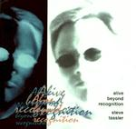

| Artist: | Steve Tassler |
| Title: | Alive Beyond Recognition |
| Label: | Sunsinger Records 8003 |
| Length(s): | 52 minutes |
| Year(s) of release: | 2002 |
| Month of review: | [10/2002] |
| 1) | Reunion | 5.53 |
| 2) | Liquid Euphoria | 4.55 |
| 3) | Firebirght | 6.49 |
| 4) | And Still She Wonders | 3.49 |
| 5) | Bring The Promise | 4.46 |
| 6) | Aeon's Arrival | 4.44 |
| 7) | Interregnum | 13.45 |
| 8) | Foreshadow | 0.42 |
| 9) | In The Night 6.27 |
Liquid Euphoria is better, and quite complex as well. Lots of passages here that alternate each other. Sometimes the music is quite merry, a bit too merry perhaps, coming closing to AOR. However, in other parts the music is far from happy. The Yes influences are recognizable, but way from the extent to which Starcastle is. This also has something to do with the fact that we have a different vocalist here. The organ is again present, and we get some church organ style stuff as well. Production could be better.
Firebirght opens really well: good vocal harmonies, good melody. Then the music starts to meander a bit and we get some Squire type bass playing. The percussion is on automatic and the overall sound is rather thin. The guitar solo's however are pure symphonic rock with some seventies type keyboards supporting.
Any track you know that contains a line similar to "And Still She Wonders"? This song not only seems to borrow the title from the song, but also the acoustic quieter part of that track. The track is in fact quite similar to the quiet part of Stairway To Heaven. The vocal part is quite different though. Bring The Promise is waltzy and quite nice. A problem with it is that it simply lacks the groove of a well-oiled band and that is too bad, because there's potential here.
Aeon's Arrival features cosmic keys and light percussion. The heavy bass and freaky keys refer to King Crimson and ELP respectively. Later more rock, but the music stays instrumental. Generally, I was thinking of Rudess here.
Interregnum is a long track which has similarities with the progressive Christmas music of Sounds Like Christmas. There is hope (in the Yes vein) shining through on this song, but on the whole it just a bit too slow. Halfway the music gets an Arabic feel, some Ravel maybe.
Foreshadow is a short tune followed by In The Night with an etheric guitar as in the first track. The guitar line comes straight out of She Is Dead of Peter Hammill's Fall Of the House Of Usher. The chorus is catchy though and reminds of Boston. Quite a good track, this.